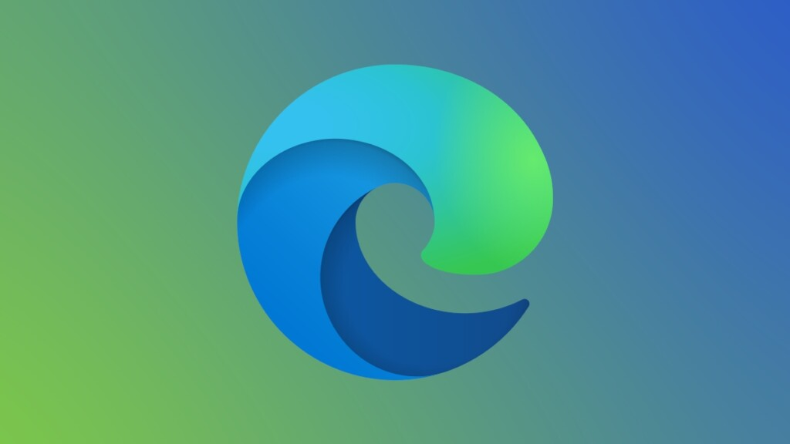

1 GOOGLE CHROME
Google Chrome es un navegador web de código cerrado desarrollado por Google, aunque derivado de
proyectos de código abierto. Está disponible gratuitamente. El nombre del navegador deriva del
término en inglés usado para el marco de la interfaz gráfica de usuario.
64,9 % de participación en el mercado.
2 Safari
Safari es un navegador web de código cerrado desarrollado por Apple Inc. Está disponible para macOS,
iPadOS e iOS, y de 2007 a 2012, estaba disponible para Windows.
Safari es la mejor forma de navegar por Internet en cualquier dispositivo Apple. Te ofrece
excelentes opciones de personalización, potentes funcionalidades para proteger la privacidad y una
duración de la batería líder en la industria para que puedas navegar como quieras todo el día.
15,4 % de participación en el mercado.
3 Microsoft Edge
Microsoft Edge es un navegador web desarrollado por Microsoft, basado en Chromium. Fue lanzado por
primera vez para Windows 10 y Xbox One en julio de 2015, luego para Android y iOS en octubre de
2017, para macOS en mayo de 2019, en Windows 7, 8 y 8.1 en enero de 2020 y para GNU/Linux en
octubre de 2020.Microsoft Edge tiene una interfaz simple y moderna que lo hacen agradable a la
vista, pero detrás de esta mejorada estética hay un navegador rápido que funciona eficientemente en
conexiones lentas y que consume muy poca memoria, especialmente si lo comparamos con Google Chrome
que tiene un consumo abismal.
6,3 % de participación en el mercado.

4 Mozilla Firefox
Mozilla Firefox es un navegador web libre y de código abierto desarrollado para distintas
plataformas, está coordinado por la Corporación Mozilla y la Fundación Mozilla. Usa el motor Gecko
para renderizar páginas web, el cual implementa actuales y futuros estándares web
4,1 % de participación en el mercado.
5 Opera
Opera es un navegador web creado por la empresa noruega Opera Software. Usa el motor de renderizado
Blink. Tiene versiones para computadoras de escritorio, teléfonos móviles y tabletas. Los sistemas
operativos compatibles con Opera de escritorio son Microsoft Windows, macOS y GNU/Linux entre
otros. 2,4 % de participación en el mercado.
| Cuadro Comparativo de Navegadores |
| Mas Usados |
Menos Usados |
| Nombre |
Razones |
Nombre |
Son malos? |
| Google Chrome
|
Chrome es omnipresente. Con una serie de características potentes, integración
completa de la cuenta de Google, un ecosistema de extensiones y un conjunto confiable de
aplicaciones,
es el navegador que fija el camino para el resto. Incluso, bloquea algunos anuncios fraudulentos.
|
UC Browser
|
UC Browser destaca por ser bastante rápido al comprimir los datos que recibimos al
abrir cualquier página o sitio web. Además, su gestor de descargas cumple su cometido con creces,
algo
de agradecer aunque nuestra conexión no sea la más rápida. |
| SAFARI
|
Porque es el navegador más ligero. ...
Aprovecha mejor la pantalla en el ordenador. ...
Es el navegador nativo de Apple. ...
Se integra perfectamente en el ecosistema Apple mediante iCloud. ...
Permite la navegación continua, aunque cambiemos de soporte. |
Falkon
|
Su aspecto nos recordará a Firefox. Por lo demás, cuenta con las funciones
habituales,
a las que hay que añadir la integración de un bloqueador de publicidad y otro de contenido Flash,
para
evitar sorpresas y problemas durante la navegación. |
| EDGE
|
Una de las grandes ventajas de Microsoft Edge es que este navegador utiliza una
cantidad muy reducida de recursos, por lo que puedes utilizarlo sin ningún tipo de problemas en
computadoras con poca memoria RAM |
Cliqz
|
Desde Alemania nos llega Cliqz, un proyecto que empezó siendo un buscador
alternativo
a Google basado en el respeto a la privacidad del usuario y que en la actualidad cuenta también con
un
navegador web que podemos descargar e instalar tanto en Windows como en macOS, Android, iPhone y
iPad.
|
| FIREFOX
|
La privacidad. Las extensiones que se pueden instalar en Firefox son muchas menos
que
en Chrome, pero éstas velan mucho más por su seguridad. ...
Más rápido. Algunas webs aseguran que Firefox es más rápido que Chrome y otras dicen lo contrario.
...
Menos consumo. |
Maxthon
|
Desde China nos llega un navegador disponible para Windows, macOS, Linux, iPhone,
iPad
y Android. Su nombre es Maxthon y entre sus peculiaridades, destaca por combinar dos motores en vez
de
uno: Webkit (de Safari) y Trident (de Internet Explorer).
|
| OPERA
|
Opera es un navegador web compatible para ordenadores y para dispositivos móviles.
Uno
de los más rápidos que puedes instalar y que apuesta por la seguridad y la privacidad de sus
usuarios
pero también por una gran cantidad de herramientas y opciones sin necesidad de instalar extensiones,
|
avant browser
|
Es desarrollado y mantenido por la empresa Avant Force, con base en las Islas
Vírgenes
Británicas. Avant Browser es una aplicación de tipo freeware, es decir, es código cerrado pero es de
uso
gratuito. |